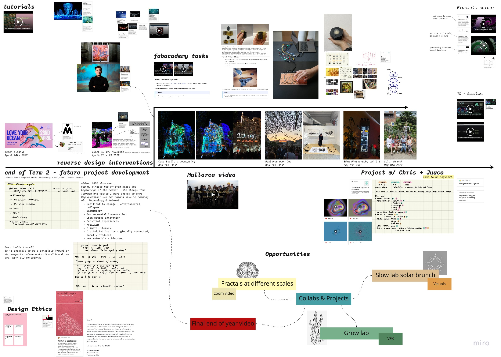
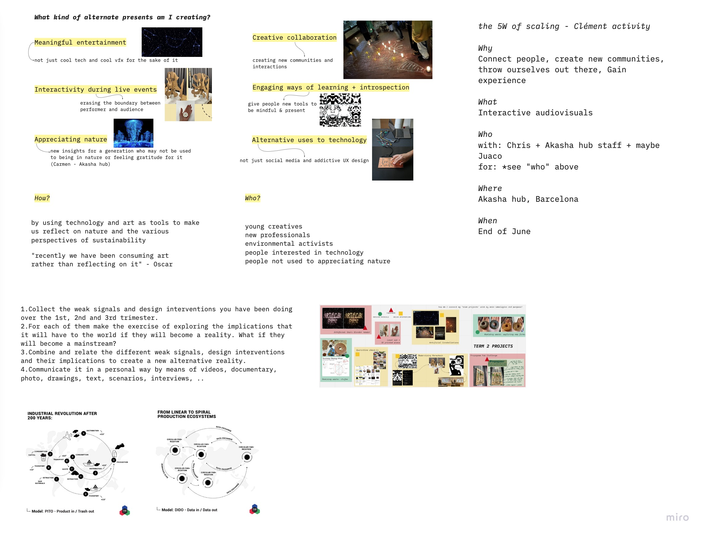
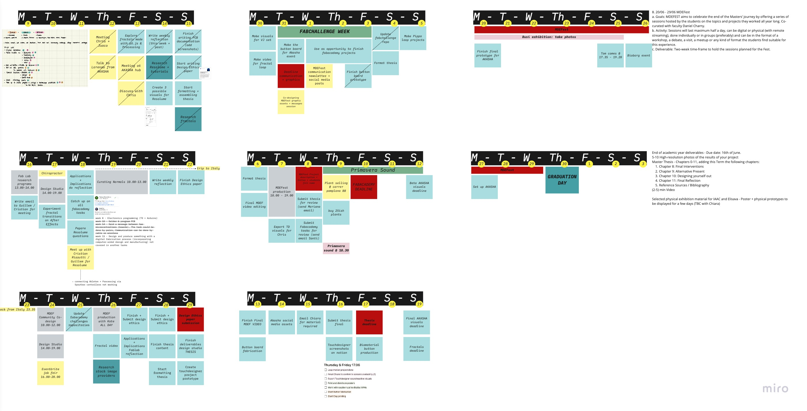
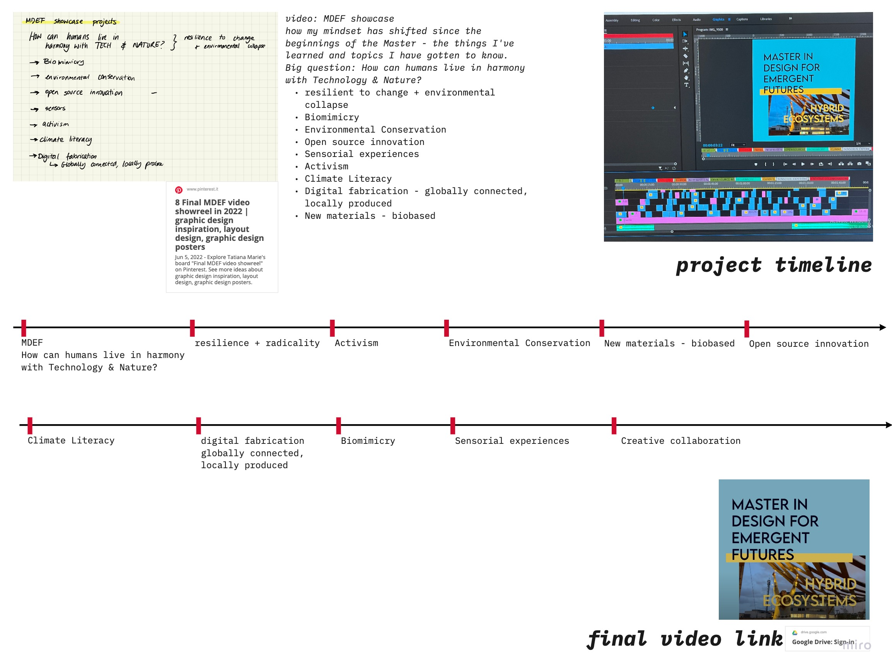

Final Design studio reflection
My design space over the past term.

Term 3 mind map.

Design studio Reflections

Calendar to organise to do lists

Final video.
For the video, I had a very precise vision in mind. Since I couldn't submit anything from our exhibition taking place two weeks after the deadlines, I decided to take a different approach. Instea, I made a video reflecting on the topics I learned over the past nine months, under the umbrella of the question: How can humans live in harmony with Technology & Nature? Full video is on the submission Google Drive folder.